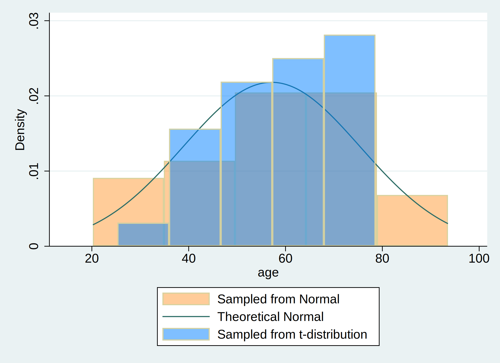

Methods
For Homework 4, we initliazed a dataset with 30 observations and subsequently simulated age using both a normal distribution and t-distribution. Below is the code utilized and histogram generated from the simulation.
. set obs 30
Number of observations (_N) was 0, now 30.
. gen age = (rnormal() * 15) + 57
. gen age_t=(rt(_N)*15)+57
. hist age, ///
> fcolor(orange%40) /// simulated normal
> addplot(hist age_t, fcolor(midblue%50)) /// simulated t-distribution
> normal /// theoretical normal
> legend(on ///
> lab(1 "Sampled from Normal") ///
> lab(2 "Theoretical Normal") ///
> lab(3 "Sampled from t-distribution") ///
> )
(bin=5, start=20.218851, width=14.665178)
. graph export histogram.png, replace
file histogram.png saved as PNG format
Figure 1. Age Distribution of Simulated Populations

Notes
Distribution of $\text{Age, years} \sim \mathcal{N}(\mu=57,,\sigma^{2}=225$)